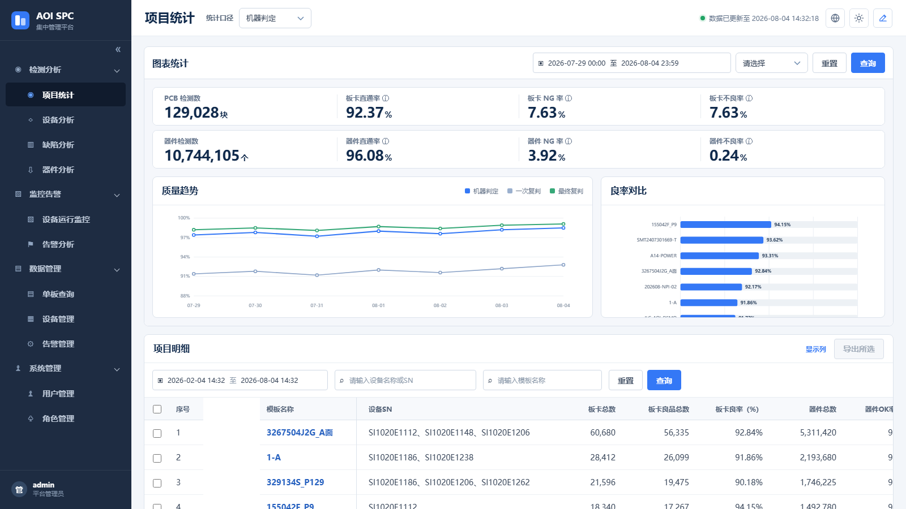
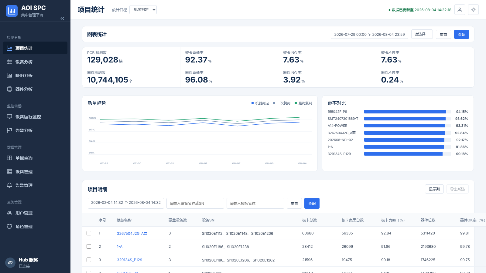
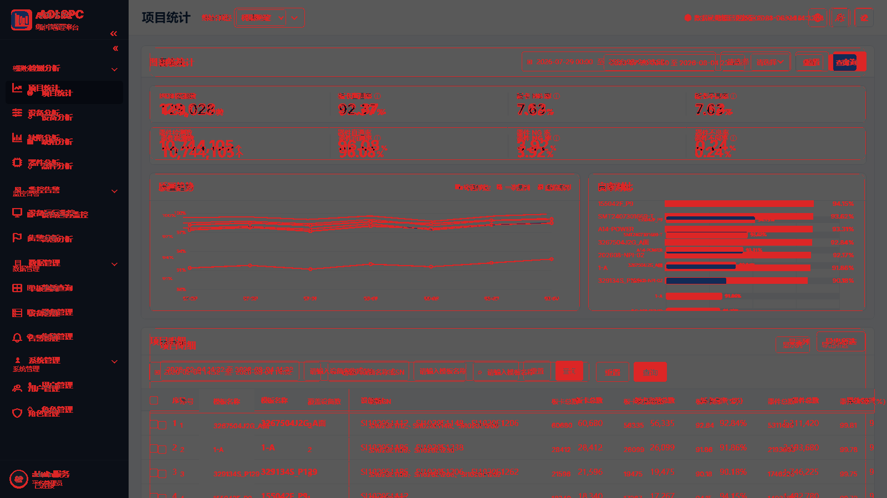

anubis hub 4363d816 · /projects · 对照 SPC 原型 · 1600×900 · 通过 DSH 工具完成
重启 DSH 后，全部步骤通过插件工具完成，不再是 CLI 脚本：
| 步骤 | 工具 | 结果 |
|---|---|---|
| 基线测量 | parity_run | projects 9.49%、shell 1.52%，几何/样式均 pass |
| 自动驾驶计划 | parity_align | 4 步：structure ×2、mock ×2（几何/样式已通过） |
| 执行计划后复测 | parity_run | projects 9.35%，delta mean −0.14% |
| 复诊 | parity_diagnose | 最差区域 (1200,399) 82.1% |
run：2026-11-23T07-25-11-203Z-j40f（基线）、2026-11-23T07-25-33-058Z-x19w（执行后）。
| 阶段 | projects | shell | 几何 | 样式 |
|---|---|---|---|---|
| 本轮基线（j40f） | 9.49% | 1.52% | pass | 0 |
| 执行计划后（x19w） | 9.35% | — | pass | 0 |



AUTOPILOT: Execute these steps immediately in the target repository.
Do not ask the user for permission, structure work, or mock data.
1. [structure] projects @ desktop — page composition
action: Geometry and styles pass but 9.49% of pixels differ. Compare section
by section (cards, charts, table, empty states) and implement the
missing or misplaced blocks.
2. [structure] shell @ desktop — page composition
3. [mock] projects @ desktop — data layer
action: If the difference comes from missing data or a backend dependency,
add fixtures or local mock data in the target repo.
4. [mock] shell @ desktop — data layer
本轮执行了第 1 步的一部分：把内容区左右内缩 14px、图表卡片改为原型的 776/500 固定宽度与 14px 间距，使图表卡片的 x 与宽度与原型一致；复测得到 −0.14% 的 delta。
| 区域 | 差异 | 原因 |
|---|---|---|
| (1200,399) / (1300,399) | 82.1% / 68.1% | “良率对比”原型是 SVG 条形图（百分比在条内），实现是 CSS 条形 + 右侧数值，几何与文字位置都不同 |
| (600,228) / (300,228) | 42.6% / 40.3% | 指标卡第二行的文字基线/字号仍有 1–2px 偏移 |
| shell | 1.52% | 图标字形（PrimeIcons vs 原型符号）、品牌 mark、底部用户块 |
| 其余 | — | 表格列宽已对齐，但行高与整体 y 仍差约 10–20px；mock 数值与原型不完全一致 |
C:\Users\shiyuan\AppData\Local\Temp\anubis-4363d816（detached 4363d81 + 未提交对齐改动）C:\Users\shiyuan\AppData\Local\Temp\pp-anubis-4363\parity.config.mjs…\.parity\runs\2026-11-23T07-25-11-203Z-j40f、…\2026-11-23T07-25-33-058Z-x19wparity_run → parity_align → parity_run → parity_diagnose